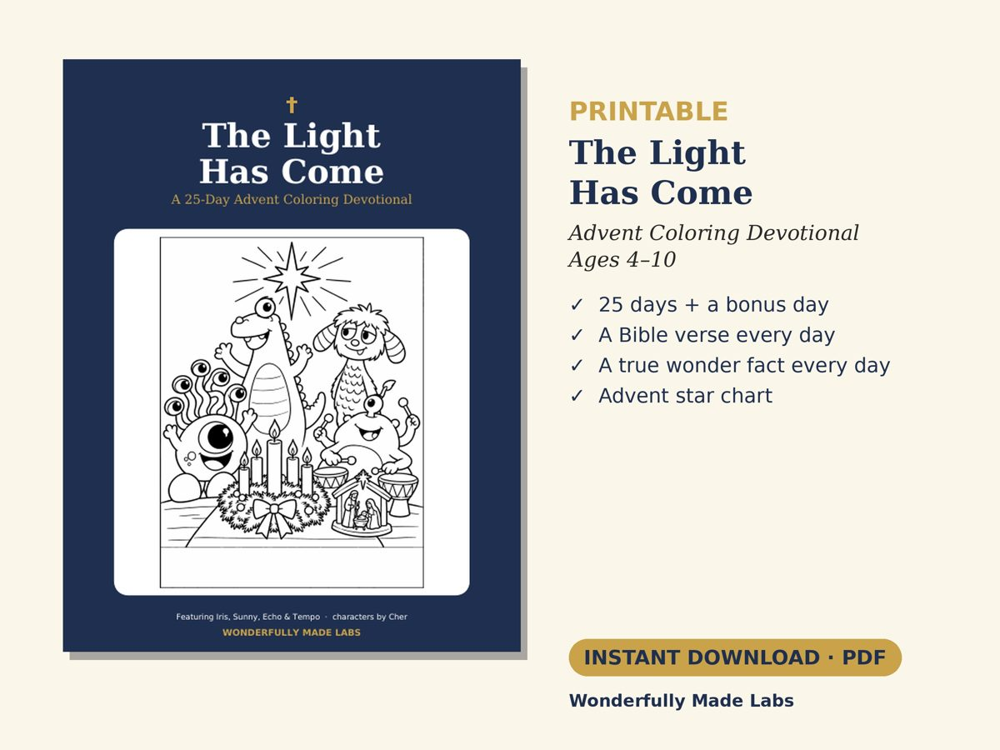
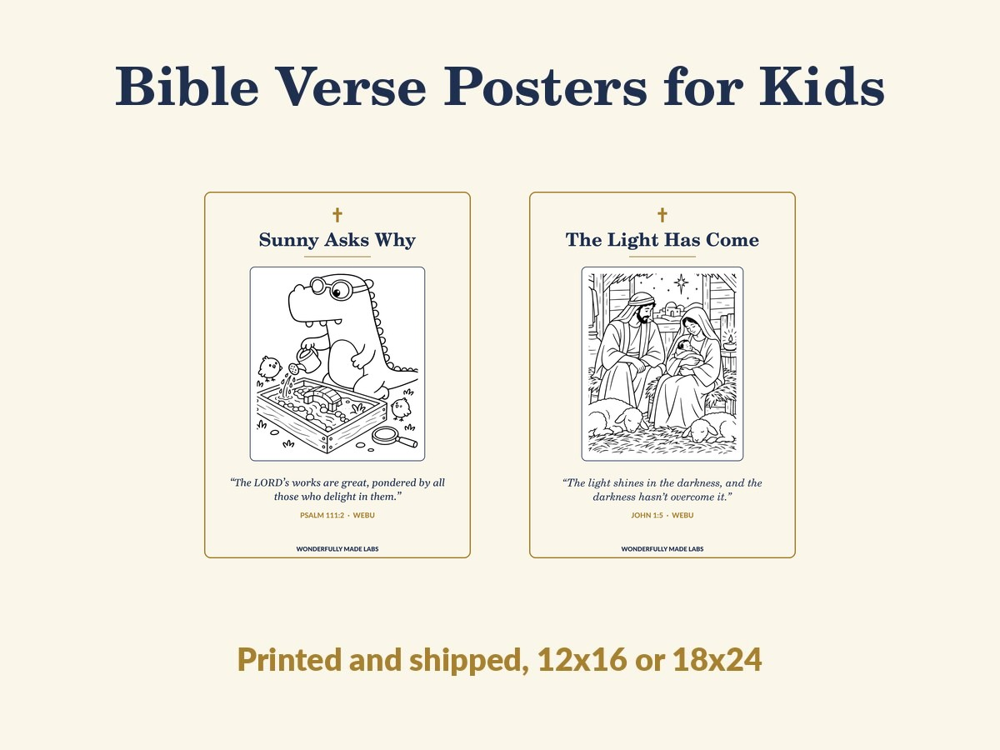
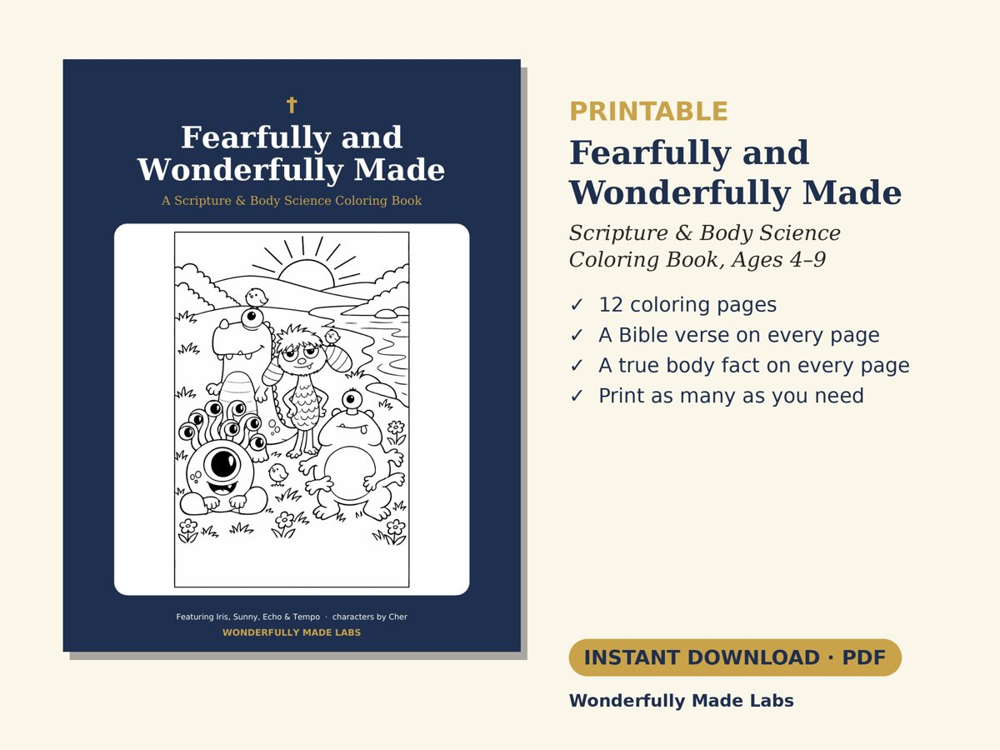
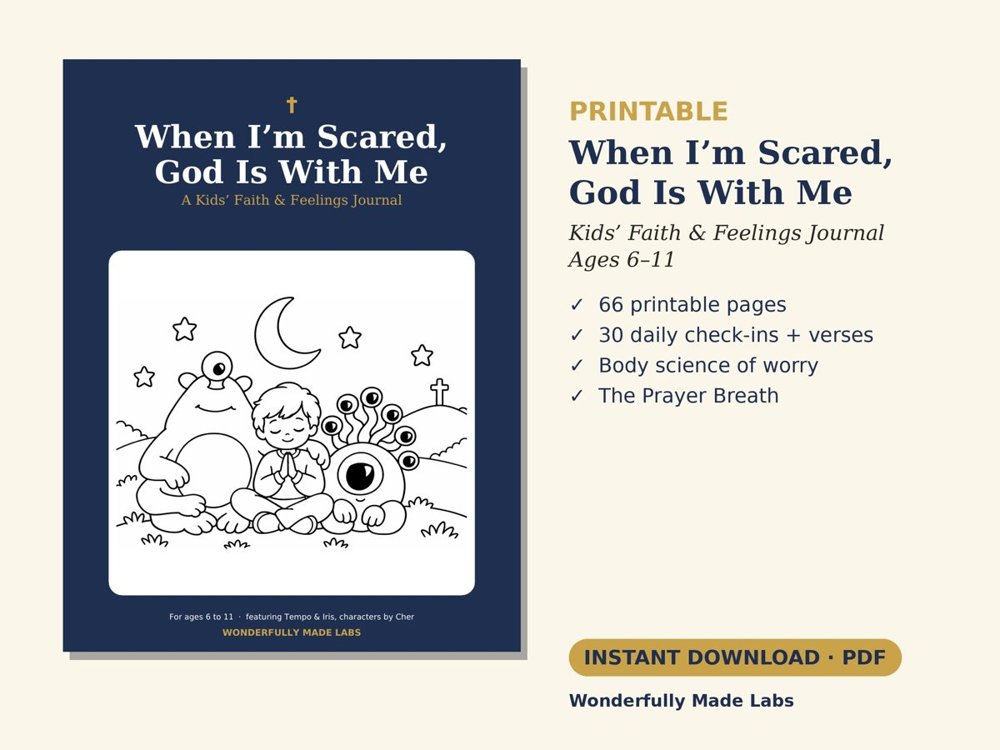
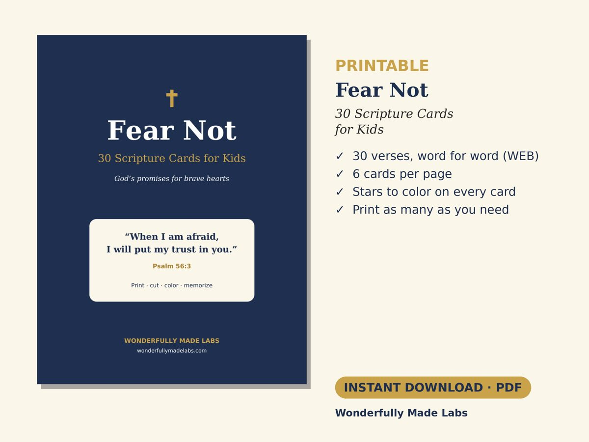

The Light Has Come: A 25-Day Advent Coloring Devotional
- A coloring page, a verse, and a true wonder fact each day
- Advent star chart
Printable on Etsy
Paperback coming to Amazon
Coloring books, journals, and devotionals where wonder comes first and faith is stated plainly. Every verse is quoted word for word from the World English Bible.



"I will give thanks to you, for I am fearfully and wonderfully made." (from Psalm 139:14, WEB)


Journals for heart health and for seasons of suffering. You can read them here on the site, or get the complete download.
Play a real medical mystery, print a few sample coloring pages, or grab this week's free printable.